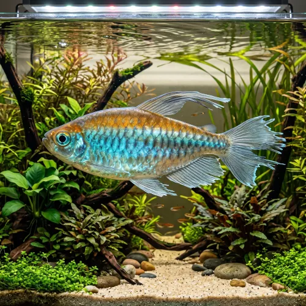

Nome popular principal
Tetra do Congo
Tetra do Congo, Tetra-do-Congo, Congo Tetra
Ficha de peixe
Tetras e Alestídeos
Um dos tetras mais impressionantes do aquarismo, cujas cores opalinas e nadadeiras exuberantes trazem espetáculo a aquários comunitários amplos.

Nome popular principal
Tetra do Congo, Tetra-do-Congo, Congo Tetra
Nome científico
Nome técnico essencial para taxonomia, cruzamento de manejo e referência editorial consistente.
Dificuldade de manejo
Use este nível como referência inicial, sempre considerando volume, estabilidade e compatibilidade do aquário.
Seção 1
Seção 2
Seções 4 a 6
Tetra do Congo tem hábito alimentar onívoro. Excelente. 1 a 2 vezes ao dia. Aceita prontamente rações em flocos e grânulos, beneficiando-se imensamente da oferta periódica de pequenos alimentos vivos como dáfnias, artêmias e larvas de mosquito.
Machos são maiores, exibem cores iridescentes muito mais intensas e nadadeiras dorsal e caudal bem desenvolvidas com extensões em filamento. Tipo de reprodução: Ovíparo. Dificuldade de reprodução: Intermediário. A desova ocorre entre plantas de folhas finas. Os ovos caem no fundo do aquário e os reprodutores devem ser removidos para evitar que devorem a postura.
Alta. Substrato recomendado: Substrato escuro ou areia fina de rio com troncos. Necessidade de esconderijos: Média. Realça seu efeito iridescente sob iluminação adequada em aquários montados com fundo escuro e plantas nas laterais e fundo.
Seção 7
Sensível a baixos níveis de oxigênio e picos de amônia ou nitrito, necessitando de água limpa, bem filtrada e trocas parciais regulares.
Seção 8
Recomenda-se manter um grupo mínimo de 6 a 8 indivíduos para que fiquem confiantes e exibam suas cores arco-íris.
Devido ao seu ritmo de nado ativo e tamanho (até 10 cm), exige um aquário com no mínimo 120 litros e 90 cm de comprimento.
O macho é significativamente maior, mais colorido e desenvolve extensões no centro da nadadeira caudal e na nadadeira dorsal.